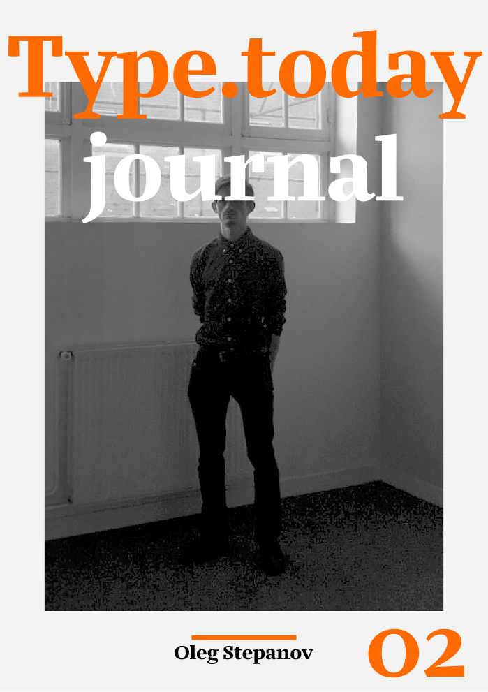

Семейство включает в себя текстовую
версию, Marlene, и экранную версию —
Marlene Grande.
Шрифт в оформлении обложки журнала

Четкие цифры с нижними
и верхними выносными
элементами.
8 октября

Плакат — Тринадцать
фольклорных групп будут
участовать в фестивале.
Шрифт в деле